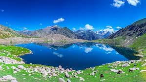
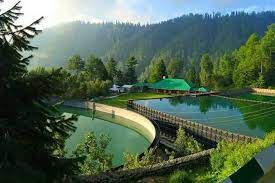
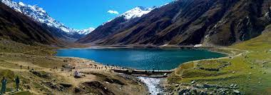
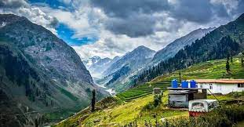

Khyber Pakhtunkhwa being a Tourism Hub plays a vibrant role in portaging a positive impact of Pakistan at the international level. Lust green valleys and ice-packed mountains of the province give a competitive edge to other provinces in terms of tourism. Its exotic beauty of northern areas captivates the tourist’s interest around the globe. Tourists destinations with alluring natural beauty are also playing significant role in providing employment opportunities. Through tourism, Khyber Pakhtunkhwa has major contribution to the economy of the country.
Places to Visit in KPK:Swat District is a district in the Malakand Division of Khyber Pakhtunkhwa, Pakistan. With a population of 2,309,570 per the 2017 national census, Swat is the 15th-largest district of Khyber Pakhtunkhwa province. Swat District is centered on the Valley of Swat, usually referred to simply as Swat, which is a natural geographic region surrounding the Swat River.
Nathia Gali or Nathiagali (Urdu: نتھیا گلی) is a hill station and mountain resort town located in the Abbottabad District of Khyber Pakhtunkhwa, Pakistan. It is located at the centre of the Galyat range, where several hill stations are situated. Nathia Gali is known for its scenic beauty, hiking tracks and pleasant weather, which is much cooler than the rest of the Galyat range due to it being at a higher altitude. It is situated approximately 32 kilometres (20 mi) away from both Murree and Abbottabad.
Saiful Muluk is a mountainous lake located at the northern end of the Kaghan Valley, near the town of Naran in the Saiful Muluk National Park. At an elevation of 3,224 m (10,578 feet) above sea level, the lake is located above the tree line, and is one of the highest lakes in Pakistan.
Naran (Urdu: ناران ) is a town and most popular tourist destination in upper Kaghan Valley in Mansehra District of Khyber Pakhtunkhwa province of Pakistan. It is located 119 kilometers (74 mi) from Mansehra city at the altitude of 2,409 meters (7,904 ft). It is located about 65 kilometers (40 mi) away from Babusar Top.[1] It is one of the most popular tourist attraction locally as well as internationally.[2] Naran valley is also Pakistan's most visited Valley, around 1.5 million people visit Naran valley every year.
